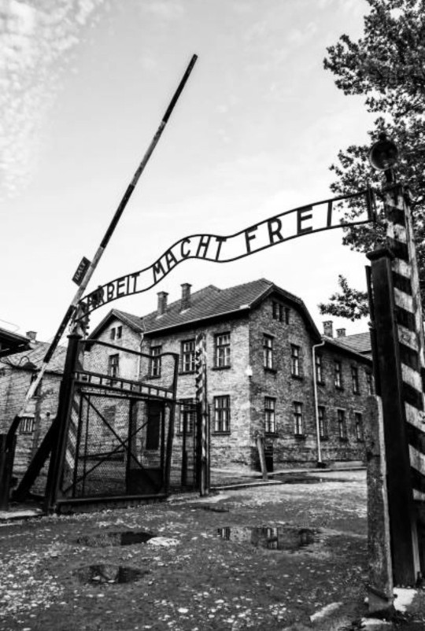

Les camps de concentration sont des lieux d’internement créés par l’Allemagne nazie dès 1933. Ils servent à emprisonner les opposants politiques, les personnes jugées « indésirables » par le régime, ainsi que de nombreux civils victimes de persécutions. Leur fonction principale est la répression, le travail forcé et la terreur.
Le premier camp, Dachau, ouvre en mars 1933. Il devient le modèle d’un système qui s’étendra dans toute l’Europe occupée.
Après l’arrivée d’Hitler au pouvoir, le régime nazi cherche à éliminer toute opposition. Les camps deviennent un outil central pour contrôler la société, réduire au silence les adversaires politiques et instaurer un climat de peur.
Les premières victimes sont des militants politiques, des syndicalistes, des intellectuels, des religieux, des personnes considérées comme « asociales » et d’autres groupes ciblés par l’idéologie nazie.
Les camps sont administrés par les SS. Ils sont organisés en sections : baraquements, zones de travail, postes de garde, lieux disciplinlinaires. Les détenus vivent dans des conditions très difficiles, marquées par le manque de nourriture, l’épuisement et la violence du système.
Le travail forcé est au cœur du fonctionnement. Les prisonniers sont envoyés dans des usines, des carrières, des chantiers ou des ateliers pour soutenir l’économie de guerre allemande.
Les camps accueillent des personnes de nombreuses origines et situations :
Chaque groupe est marqué par une couleur ou un symbole sur les uniformes, selon la classification imposée par les SS.
Les conditions dans les camps sont extrêmement dures : surpopulation, manque d’hygiène, travail épuisant, discipline sévère. Les détenus sont soumis à des règles strictes et à des punitions fréquentes.
Malgré cela, des formes de solidarité existent entre les prisonniers, qui tentent de s’entraider pour survivre.
Avec l’expansion du conflit, le système concentrationnaire s’étend. De nouveaux camps sont créés dans les territoires occupés. Le travail forcé devient essentiel pour l’économie de guerre.
Certains camps deviennent des lieux de transit vers les centres d’extermination.
À partir de 1944, les armées alliées découvrent les camps lors de leur avancée. La libération révèle l’ampleur des souffrances infligées aux détenus.
Les anciens camps sont aujourd’hui des lieux de mémoire. Ils rappellent l’importance de défendre les droits humains, de lutter contre la haine et de protéger les libertés fondamentales.